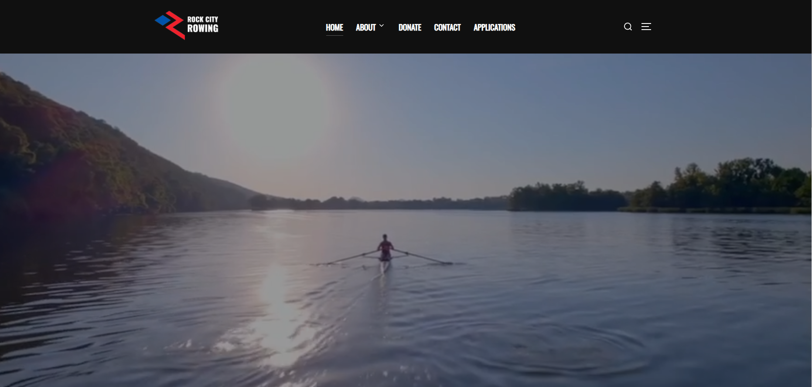

Capstone Reflection
Description
My project, Rock City Rowing with Arkansas Boathouse Club, was a simple, clean overhaul of their existing web presence. They didn't have the time to not only create a website, but keep it updated, so they enlisted us. My areas of responsibility was to create the pages and update them with the correct information, and develop plugins that were needed throughout the project duration.
Reflection
Now that our capstone project has come to a close, my first thoughts on the project wasn't really a thought, but more of a sense of accompolishment. I remember when we were at the end of IT 3650, and I was quite honestly nervous and scared to obtain a client. I knew I was ready, but I was a little apprehensive. As soon as we got into groups and found out about our client, I was immediately relieved of that anxiety, and I was ready to get that project on and rolling.
Some of the most interesting discoveries I made was really just about WordPress, and Gravity Forms. They were huge, they were scary, but they were easy to work with and has made my ability to work with them in the future, far greater.
I honestly think some of the most challenging things that happened weren't a plugin or something a client wanted, but it was just trying to work with WordPress. I was sort of a luddite when working with WordPress, although I had a little experience with it, it was challenging. When I finally learned everything I needed to know and more, it became a whole lot easier.
I think some of the most powerful learning moments were honestly just the plugins. WordPress is extremely plugin rich and it sort of spolied us. Whether we wanted to add google analytics via the plugin tab or install our own plugins like gravity forms, it was all there.
The most important thing that I learned during this whole project, was definitely success skills. I knew talking to the client was important, but it became something that needed to happen almost every week, if not every day, to make the website they wanted. It was also important to be transparent not only to the client, but to my teamates as well.
I realized I had come up with my final best solution when I finally stopped tweaking any development and let the page be. It was only then when I was accompolished with my work.
Theres not really anything that I would change or do differently on future projects. I really enjoyed what I did, created, and accompolished
One thing I would like to improve about myself is just website design. I know how to make good design decisions and how to make stunning websites, but sometimes I overestimate my self. So the main thing I need to work on is my design muscle.
I think I can better support and encourage my teammates on future project just by being more open to work. Maybe I can take the load off of some of the other people in my group or maybe even ask for help when I need it.
I will continue to use what I have learned in the future on future websites. Whether that be with clients or for myself.